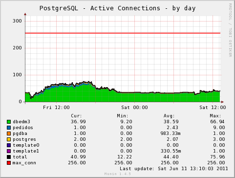
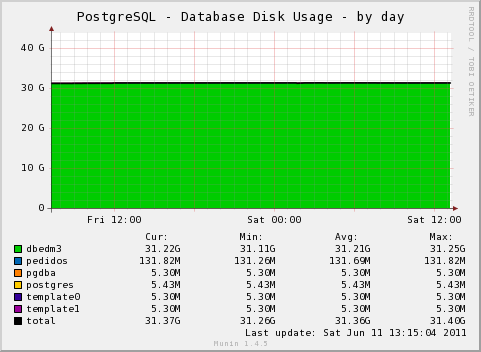
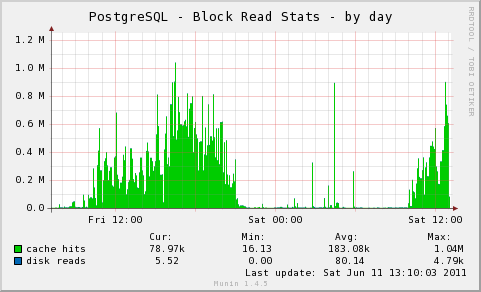
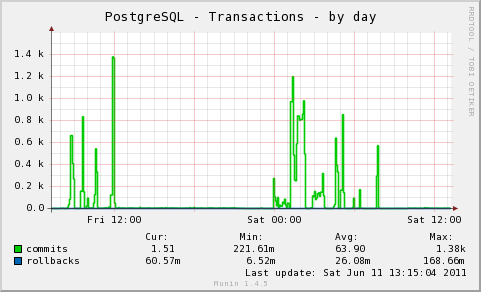
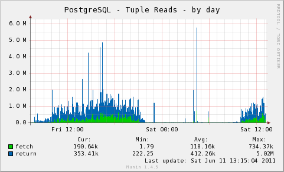
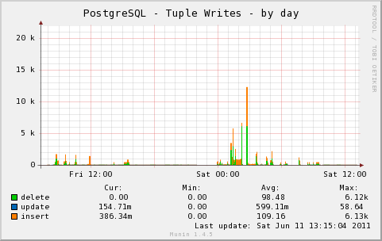
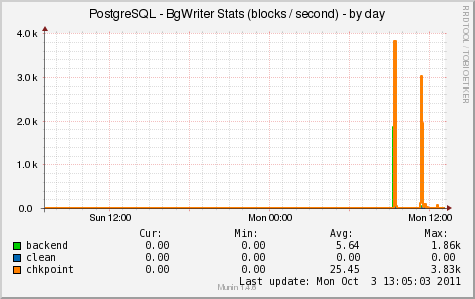
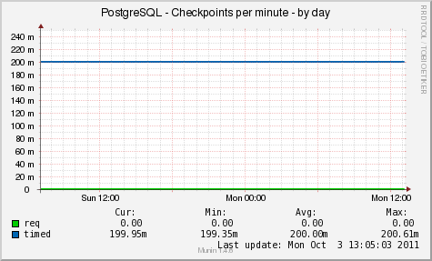

The multigraph plugin implements the following graphs:
|  |  |
|  |  |
|  |  |
|  |  |
| Variable | Description |
|---|---|
| host | PostgreSQL Server IP. (Defaults to UNIX socket if not provided.) |
| port | PostgreSQL Server Port (Defaults to 5432 for network connections.) |
| database | PostgreSQL Database for monitoring connection. (The default is the login the for connecting user. |
| user | Database User Name (The default is the login of OS user for UNIX sockets. Must be specified for network connections.) |
| password | Database User Password (Attempt login without password by default.) |
| include_db | Comma separated list of databases to include in detail graphs. (All enabled by default.) |
| exclude_db | Comma separated list of databases to exclude from detail graphs. |
| detail_graphs | Enable (on) / disable (off) detail graphs. (Disabled by default.) |
| include_graphs | Comma separated list of enabled graphs. (All graphs enabled by default.) |
| exclude_graphs | Comma separated list of disabled graphs. |